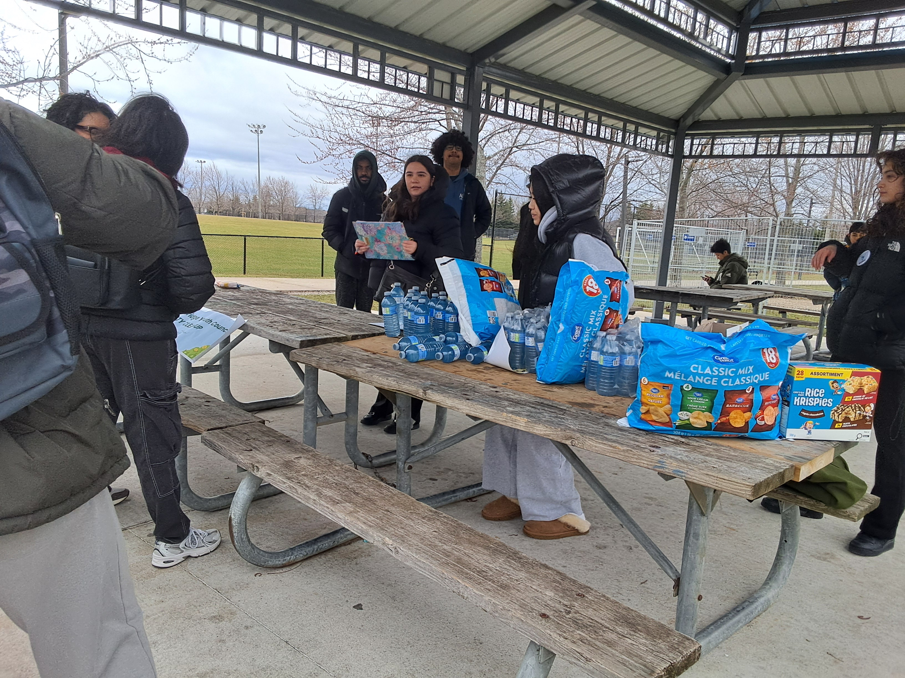
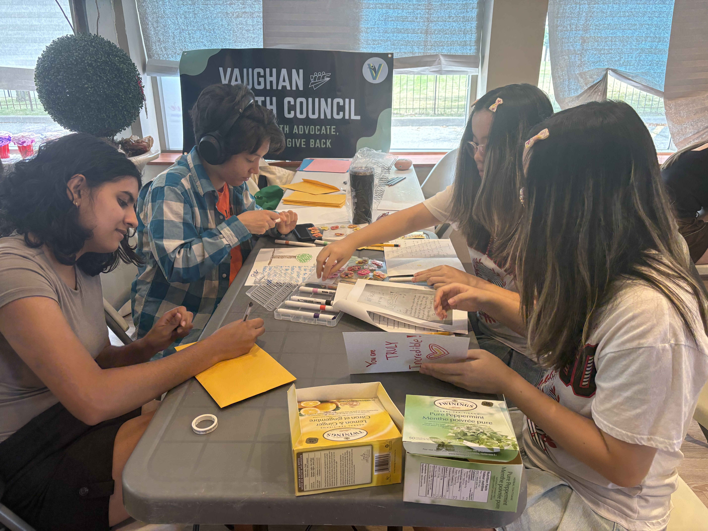

Vaughan Youth Council
Vaughan Youth Council
The Vaughan Youth Council provides a platform for youth aged 14–18 across Vaughan to share their input, take on leadership roles, and shape the future of our community.
Get InvolvedWho we are
We bring together youth ages 14–18 who want a meaningful voice in their community and a place to turn their ideas into action.

What we do
We create workshops, advocacy projects, conversations, and volunteer opportunities that help young people learn skills, meet local leaders, and contribute to Vaughan.

Explore the programs and events where youth can connect, contribute, and grow in Vaughan.
Our flagship annual event connecting local youth with community groups, organizations, and leadership opportunities.
Conversations with local leaders about youth issues.
Helping youth understand and influence local decisions.
Hands-on volunteer work improving Vaughan’s public spaces.
Community-building events for youth.
Cardmaking project supporting seniors and vulnerable residents.
Whether you are looking to earn volunteer hours, gain leadership experience, or voice your opinion on community matters, explore our site to get connected: